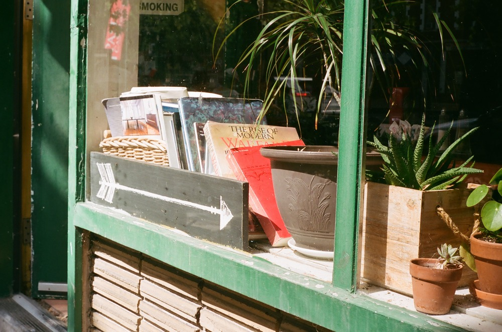
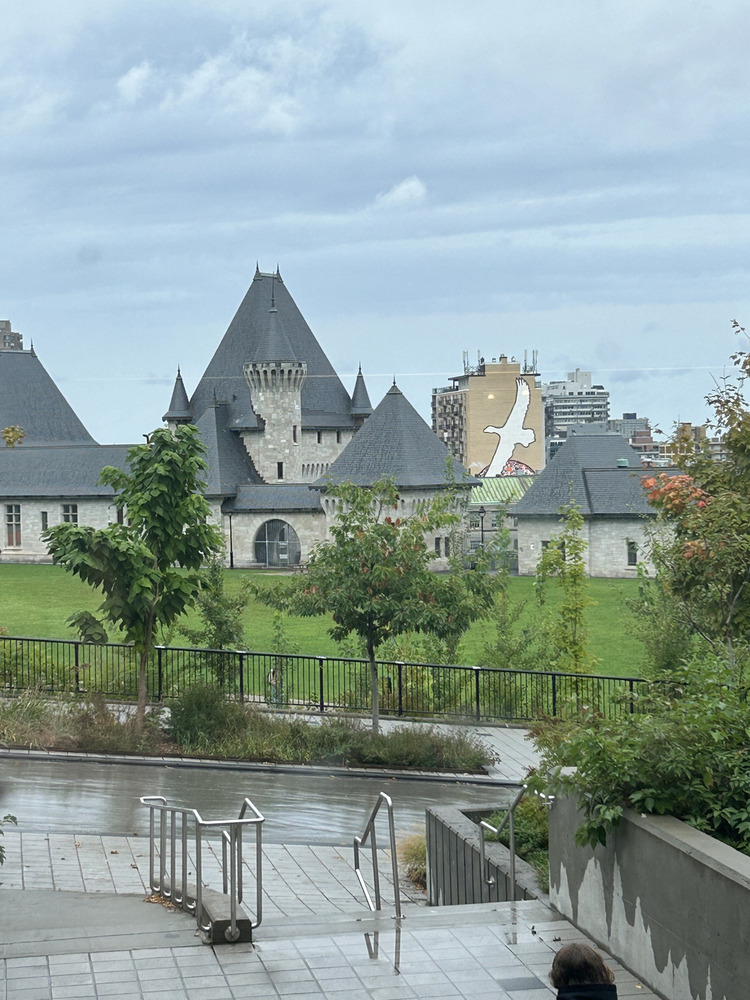
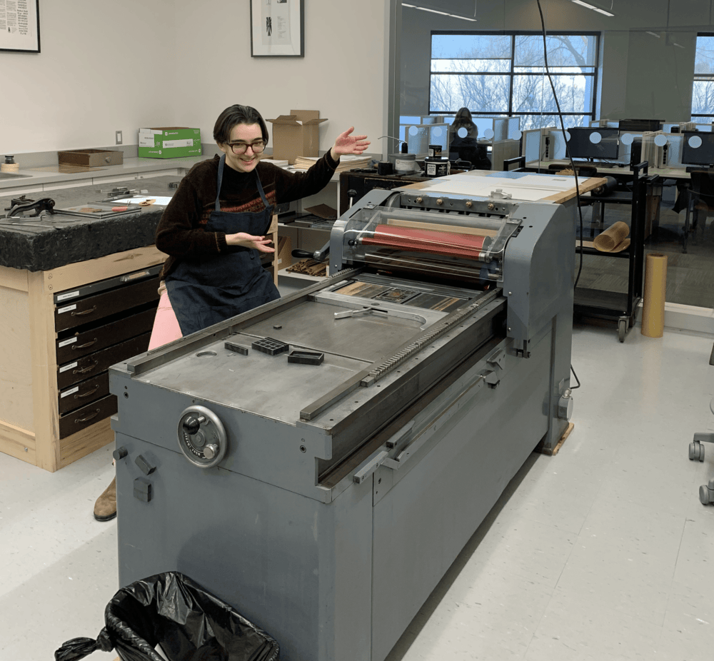
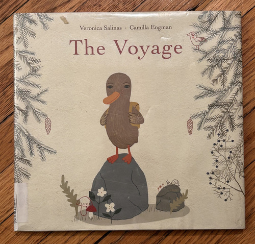
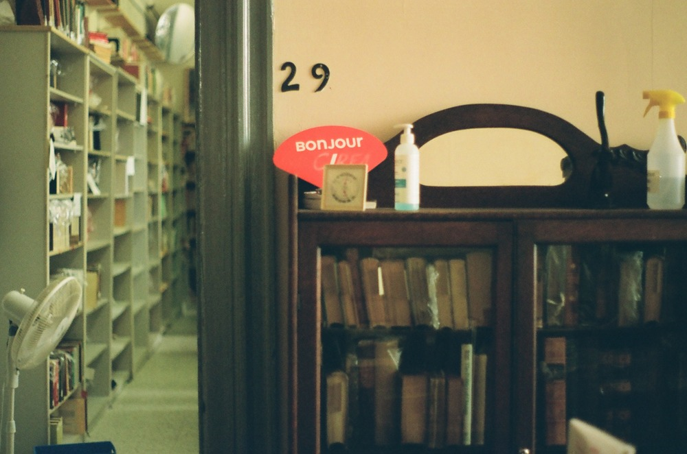
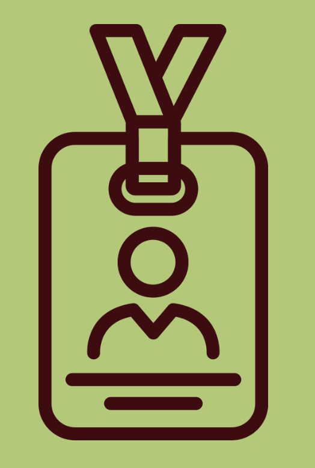
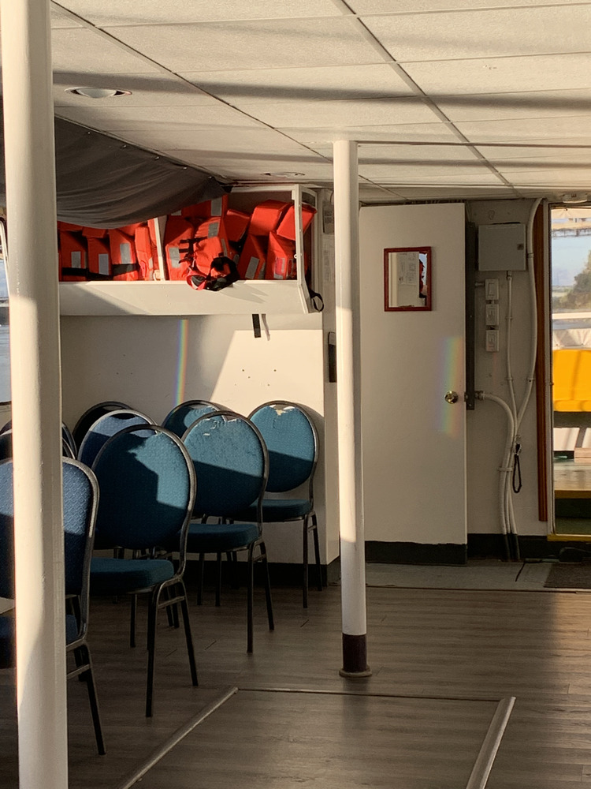

Introduction

Zoe is a current MIST student at Mcgill University in Montreal, Quebec, Canada.
They are from Dartmouth, Nova Scotia originally and raised in Ottawa, Ontario. Their
undergraduate studies were in Philosophy and English Literature, with some
specialization in Digital Humanities. They enjoy going to the movies, live theatre,
live music, and hosting shabbat dinners with their friends. They also do some amateur photography.
The images on this website are all their original work.
Zoe’s professional focus began in archives, as they did some undergraduate work with rare books.
Since starting the program they have pivoted towards data science, taking courses on web design
and database management. They enjoy working in archives and libraries, both of which they’ve
done fairly extensively on a volunteer basis. They love linking information to user needs and mending gaps in
the systems that make information less accessible. They’re eager to gain more experience
and expand their portfolio.
Education

⛫ McGill University
- 2023 - Ongoing
- 3.92/4.00 CGPA
Currently completed all required core courses, as well as:
- Classification & Cataloguing
- Archival Principles & Practice
- Information Literacy
- Web System Design
- Database Design & Development
- Government Information
I decided to enrol in the MIST a few years after moving to Montreal because I was looking forward to my future career goals.
I quickly fell in love with the program, my peers, and the communities surrounding the information science profession.
I was especially intrigued by the long history of information science, which has grown alongside person-to-person communication
technologies over the last century. It’s no small task to keep up with, and keep sane within.

⛫ Carleton University
- 2017 - 2021
- 11.32/12.00 CGPA
- Minor in English
- Focus in Philosophy
- Focus in Digital Humanities
I went to Carleton directly out of high school, graduating in 4 years. My last year was online due to Covid. The Hums program was small, allowing me to have a more personal relationship with my professors, who provided ample feedback and allowed my writing and research skills to grow in leaps and bounds. I have many fond memories of my time there.
Notable Projects

Philosophy for Children
As part of a blended undergraduate/graduate seminar class in the philosophy department, me and my
colleagues designed and implemented a series of workshops for teaching philosophy to children via
picture books. My book is pictured on the right.
I worked under the guidance of
Dr. Melissa Frankel at Carleton University. You can read more about P4C here.
This project occured in the winter of 2021.
Hertog Fellowship
During the summer of 2021, I had the honour of being selected to participate in fellowship with
the Hertog Foundation, a private educational organization based out of Washington, D.C. I participated
in the summer course “Free Speech in a Fractured Republic” led by Martha Bayles. I was recommended for the program by Dr. Geoffrey C. Kellow.
CALL/ACBD Conference Volunteer
During the summer of 2024, I was able to attend the Canadian
Association of Law Libraries Annual Conference as one of their student volunteers, alongside
a law student and the conference planning staff. I observed the keynote given by Tom Mulcair and
learned about the current debates and initiatives going on in the field of law librarianship. Some
of the talks I most enjoyed were:
- Generating Guidelines for Artificial Intelligence for Legal Research and Writing
- Democratizing Legal Knowledge Promoting Open Publishing for Secondary Legal Materials
- Le langage simple principes de communication et initiatives de la Cour suprême
- New Canadian Open Access Legal (COAL) Citation Guide / Lancement du Guide canadien de
la référence juridique en accès libre (RJAL)
CIRFA Cataloguing

Under the guidance of Christine Jacobs, me and a team of student volunteers made headway in cataloguing the collection of texts held by the Centre Internationaliste Ryerson Fondation Aubin. The collection consisted mainly of books owned by Stanley Bréhaut Ryerson, and some works donated by his friends and colleagues. The mandate of the foundation is to “entend contribuer au décloisonnement des espaces de production de la pensée progressiste et du savoir engagé.”
This project used the OPALS automated library system. Over the summer, my colleagues and I filled
out MARC records in this system according to RDA cataloguing standards. We did a combination of
original and copy cataloguing, and also took care to create subject headings in both LCSH and RVM
to preserve equal access regardless of language. Although we did not complete the cataloguing of
the entire collection, we made great improvements, and learned a lot about the ins and outs of
library cataloguing.
This project occurred over the summer of 2024.
MUHC Tanguay fonds
Since Fall 2023, I’ve been contributing to the
MUHC Arts & Heritage Center, as well as the MUHC permanent archives. My work has consisted
in a variety of odd jobs, including digitization and description. My largest project to date
has been the weeding, description, and digitization of the fonds of Jean-Claude Tanguay, an
artist and illustrator who created materials for the Montreal Children’s Hospital for many years.
This project is ongoing under the supervision of archivist
William Jones.

Communication Officer for MISSA
I am an executive member of MISSA, the McGill Information Studies Student Association, an elected volunteer position I hold for the 2024-2025 school year. In this position I have been responsible for drafting a weekly newsletter, managing the MISSA social media accounts, and updating the MISSA webpage
In this role, I have the honour of working closely with the School's adminstration and faculty, as we attempt to support eachother to meet the needs and expectations of the student body. I have also completed several web standards trainings in order to edit the MISSA webpage. On a day-to-day basis, I mainly compile and promote other student and adminstrative initiatives, via weekly emails to the student body and regular instagram posts.
CCA Cataloguing Practicum
Beginning in the Winter 2025 term, I start a cataloguing project with the Canadian Center for Architecture,
a museum and research center here in Montreal. The CCA's unique collections and rotating exhibits draw a variety of
visitors to the site, from academics, to architects, to artists. This project will consist in original and copy catloaguing of their library collections, primarily monographs. It will also involve the revision of existing records. The practicum will give me the opportunity to interview and shadow various staff members at the CCA, and gain experience in museum adminstration.
Work Experience
The following is a comprehensive overview of my work experience. Although mostly not information-science related, it provides context as to my background, experience, and strengths.
2018 - Research Assistant
Carleton University, Ottawa
Summer 2018 - Course Pack Production Assistant
- Created course packs for universities. Main duties consisted in scanning, digitally
cleaning, and collating documents together.
- Included a special project updating office documents on fair use.

2018-2021 - Cashier & Floater
- Working on cash & as a floater, which included duties such as locating items for clients, collecting carts, returning misplaced store items, and bagging groceries.
Summer 2021 - Bartender and Tourguide
- Bartending: served drinks, monitored visitors for intoxication, and managed bar space.
- Tour Guiding: performed 45-minute tours of Ottawa while we drifted down the canal.
- Bilingual position, French and English.
2021-2024 - Live Captioner
VITAC Canada, Montreal
- Creating TV captions for the deaf and hard of hearing
- English team in a French office